4:51080×1350
Two animators, one stateAt(t) each, through both emitters. Everything on the
checkerboard is an animated SVG: no fonts, no scripts, no external references, transparent,
glyphs as outlines. The same stateAt feeds resvg for the video. Copy is the
Cal.com set; there is no interface yet, so this page is the spike's output, not the tool.


Aspect is an input to the animator, not a crop — each is a real layout. The stack clips
beneath the locked logo with a clipPath rather than a background-coloured cover,
which would look right in the video and let the type show straight through in the SVG.
These are real files off the pipeline, not a UI. The export modal with its three intents is
not built — npm run spike writes all of this from the command line, including
the PNG-in-MOV masters, which are 34 MB and 3.2 MB and so are not hosted here.
The one that proves the hard half: SMIL interpolates the path d itself, which only
works because every instance serialises to the same command token count. Weak as a demo —
fit-to-width holds the word at constant width, so it thickens in place.
| output | scroll stack · 7.1s | weight pulse · 3s |
|---|---|---|
| animated SVG | 139 KB | 58 KB |
| PNG-in-MOV — After Effects | 33.9 MB | 3.2 MB |
| QuickTime Animation (qtrle) | 66.9 MB | 4.6 MB |
| H.264 mp4 CRF 17 — X | 3.3 MB | 0.2 MB |
| resvg render, 1080×1080 | 37.0 ms/frame | 14.1 ms/frame |
PNG-in-MOV beats qtrle by roughly half on this content, so the plan's open question is answered: PNG. ProRes 422 HQ would have been about 200 MB for the same seven seconds.
{kind=link}